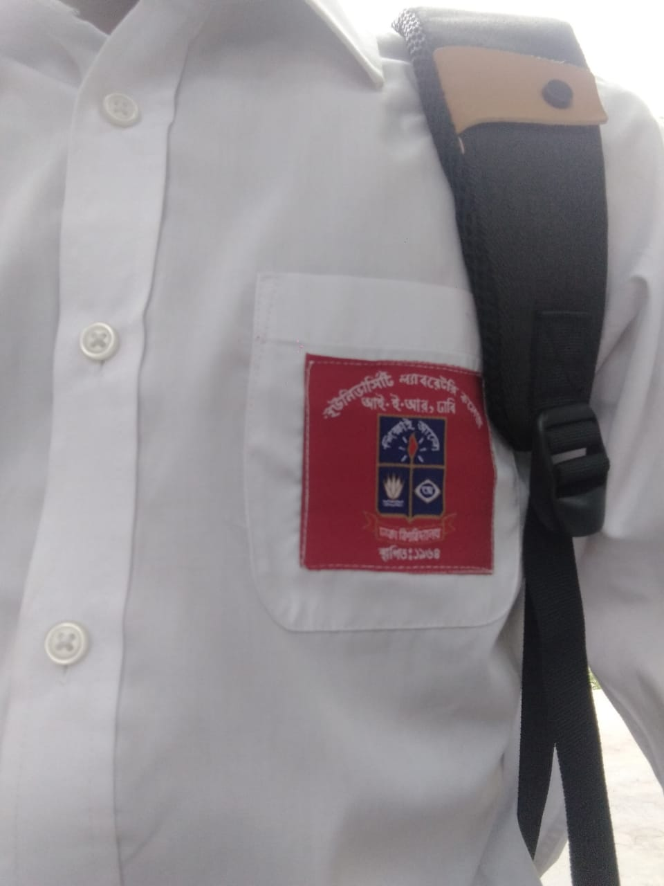
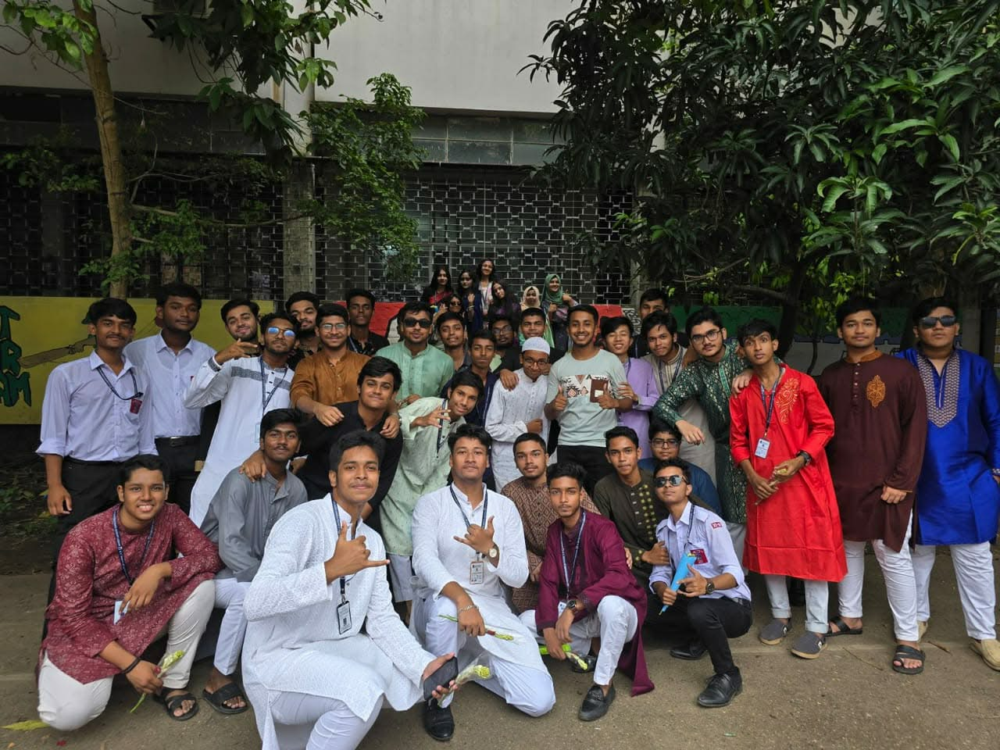
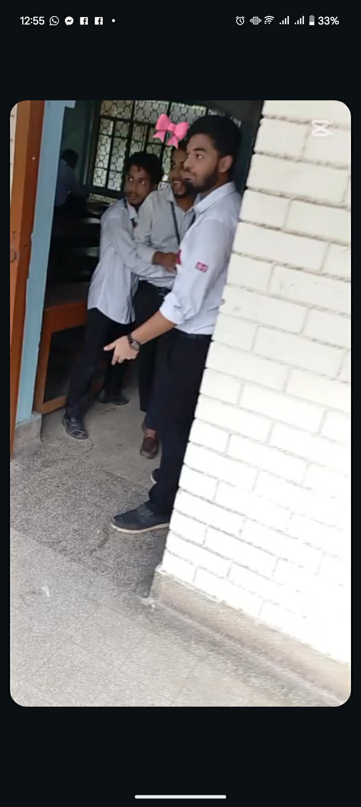
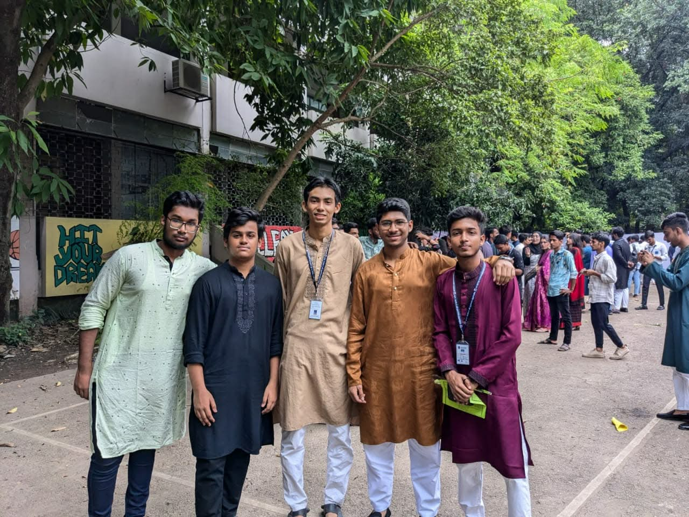
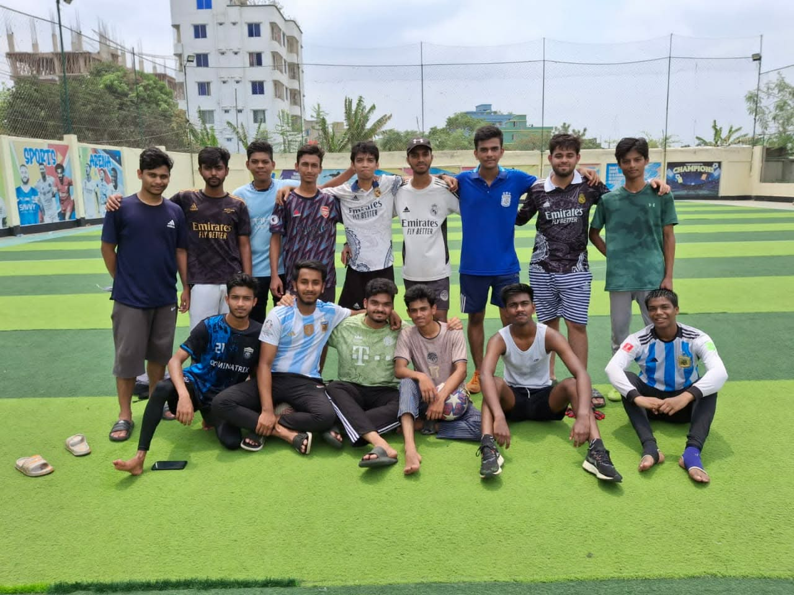
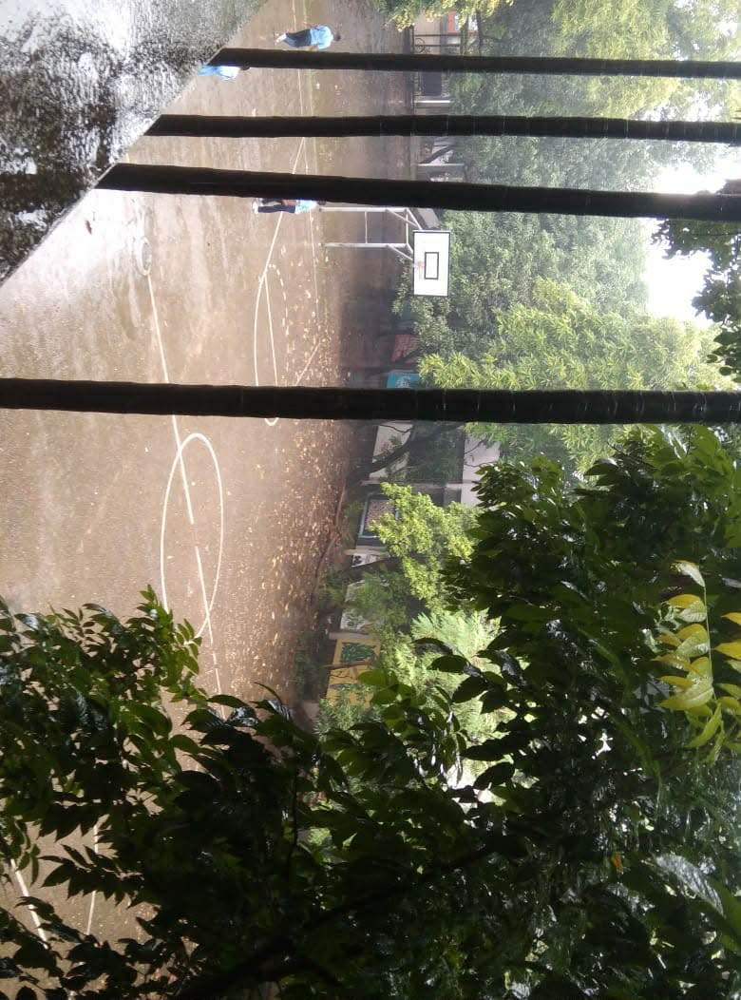
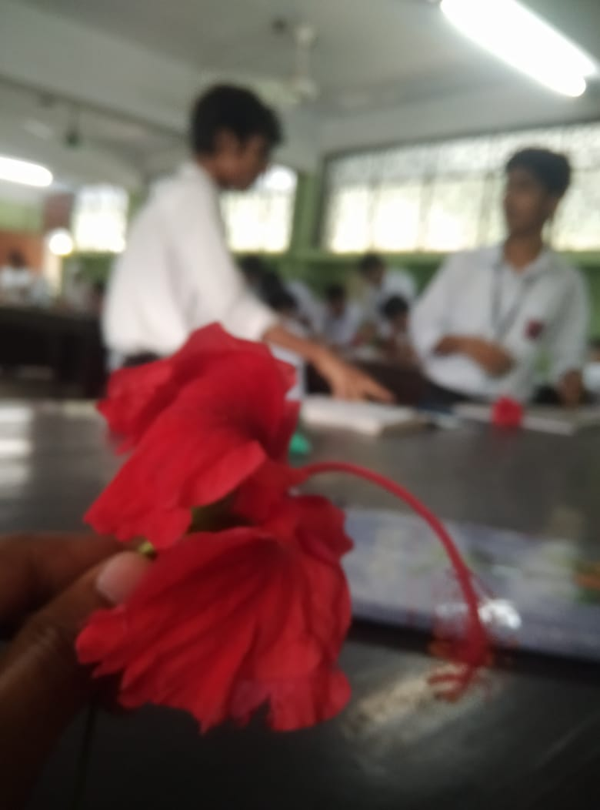
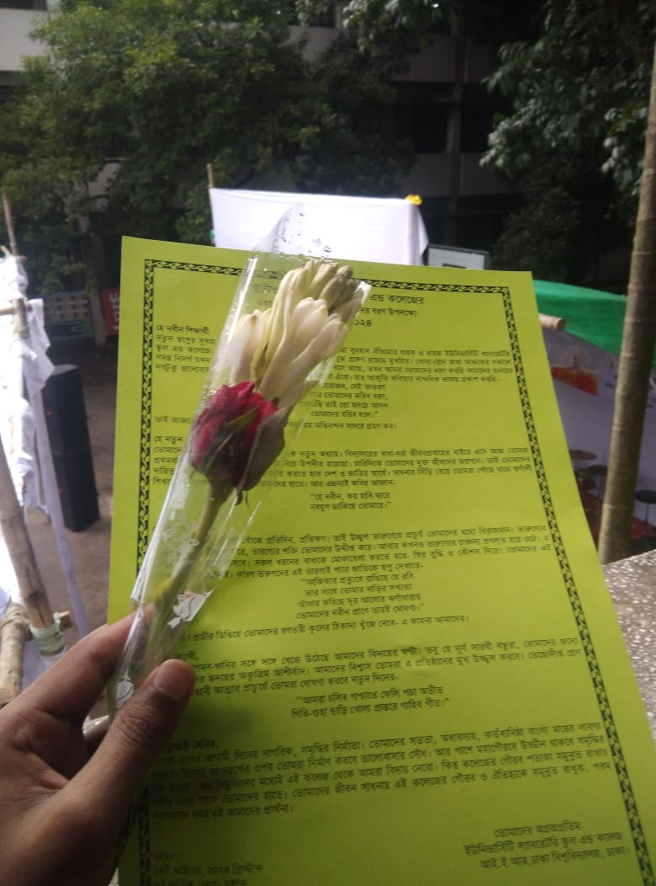
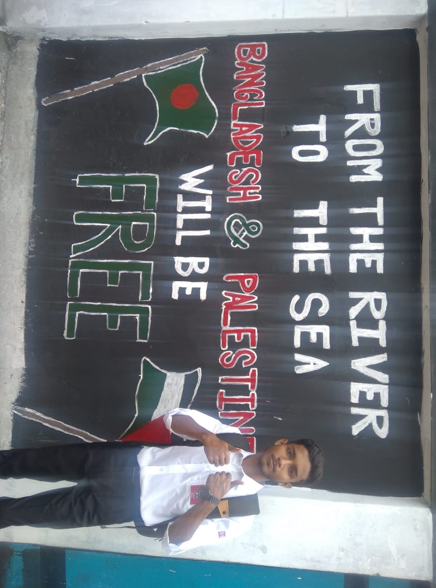

CHAOS.mp4
BATCH: 24-25
HSC 26

CAM 01 [MAIN]

CAM 02

CAM 03 [GANG]
▼ SCROLL TO PLAY FOOTAGE ▼
TAPE 01
SWEET_CHAOS
কলেজ লাইফ!!! জীবনের শত শত ঘটনার মধ্যে খুব ছোট্ট একটি মূহূর্ত তবুও অনেক মধুর স্মৃতিতে ঢাকা। নতুন মুখ, শিক্ষক-শিক্ষিকা তারপর বন্ধুদের কথা তো না বললেই নয়। এই ইউল্যাব ক্যাম্পাসে কম দুষ্টামি করিনি বটে। ক্লাস বাঙ্ক থেকে শুরু করে কলেজ পালানো...


NO SIGNAL
ERROR
NO SIGNAL
SECTION B
TAPE 02
RAIN_AND_MUD
● LIVE
করিডোরে পানি দিয়ে খেলা, বৃষ্টিতে ভেজা, ভিজতে গিয়ে একজন আরেকজনকে কাদা মাটিতে ফেলে দেওয়া, আমাদের সেই ছোট্ট মাঠটায় ফুটবল খেলা আরও যে কত কি!! তার মধ্যে বন্ধুদের আজব কান্ড আর তাদের দেওয়া আজব সব নাম কি আর বলবো।

MATCH DAY

WEATHER: RAIN
ARCHIVED_FOOTAGE
LOCATION: ULAB CAMPUS // STORAGE: FULL

PRACTICAL_CLASS

GIFTS

SOLIDARITY
CHAOS_REDUX
"স্মৃতি খুব দীর্ঘায়ু প্রাপ্ত না হলেও দিন শেষে এই সামান্য মূহূর্ত গুলো মধুর স্মৃতি হয়ে লিখা থাকবে। এই বন্ধুরা আর ইউল্যাবের করা দুষ্টামি হয়তো কলেজের স্মৃতির চাদরে লিখা থাকবে। তবে দিন শেষে জানি না কে কোথায় যাস কিন্তু ভালো থাকিস মামা তোরা সব সময়।"
>> END_OF_TAPE
ALLAH DOES NOT BURDEN A SOUL BEYOND THAT IT CAN BEAR
[ QURAN 2:286 ]